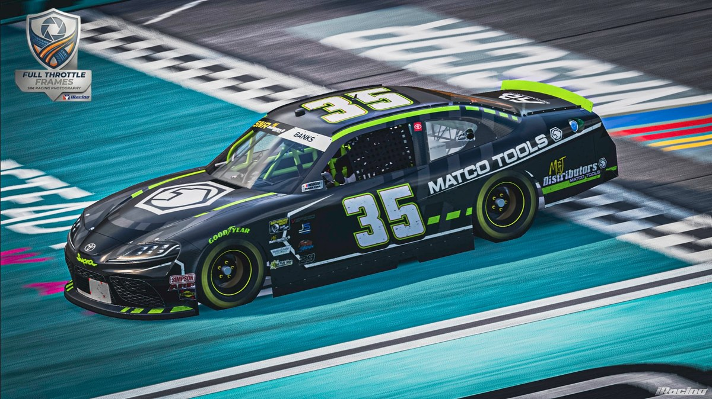

Banks Takes the Lead — Wins at Homestead to Seize Championship Points Lead

Joshua Banks continued his remarkable Chase run Saturday Night at Homestead-Miami Speedway, winning Chase Race 2 of 5 to claim his 4th victory of the Season 6 campaign and surge to the top of the championship standings. Banks now leads the Chase with just 3 races remaining.
It was Adam Cabot who owned the majority of the race, leading a dominant 89 of 140 laps from the 2nd starting position and looking every bit like a driver headed to Victory Lane. Cabot was in a class of his own for the first two-thirds of the event, pulling away from the field and controlling the pace with authority.
That all changed on Lap 100 when the lone caution of the night flew, resetting the field and shuffling the strategy. Joshua Banks, starting from the pole, executed a perfect pit call and exited pit road with the race lead. From that moment, he never looked back — leading the final 35 laps to take the checkered flag. Cabot, who led 89 laps and was the fastest car all night, ultimately crossed the line in 19th after the pit cycle shook out against him — a heartbreaking result for a dominant performance.
Bailey Turner finished a strong 2nd and A.J. Stravato charged to 3rd. Elliott Butler — the reigning Chase Race 1 winner at Talladega — backed up last week’s victory with a composed 4th place finish, showing remarkable consistency over the opening two Chase races. J R Shepherd rounded out the top 5. Dakota Floyd2 ran to 6th, Kenny Kibbey 7th, and Jeff J. Wright came home 8th.
Chase Standings — 3 Races Remaining:
Joshua Banks’ win vaulted him 2 positions to the championship lead at 2,103 points. Elliott Butler’s back-to-back strong results have him sitting 2nd at 2,100 — just 3 points back — making him one of the hottest drivers in the series right now. Bailey Turner sits 3rd at 2,098, making it a three-driver, 5-point battle at the very top. Kenny Kibbey holds 4th at 2,084 and Jeff J. Wright is 5th at 2,080. Dakota Floyd2 and J R Shepherd are tied at 6th with 2,075 points, followed by Phillip Brewer at 8th (2,074) and Seth Hatchel at 9th (2,073). A.J. Stravato’s podium finish moved him up 3 spots to 10th at 2,053. Caleb Weekley (2,045), Chuck Sweeting (2,040), Justin Richie (2,037), and Angelo Hronis (2,036) round out the Chase field — with Hronis clinging to the final spot by just 1 point over Richie.
The SNR Cup Series heads to Michigan International Speedway next Saturday Night for Chase Race 3. Tune into VSPEED for full live coverage!